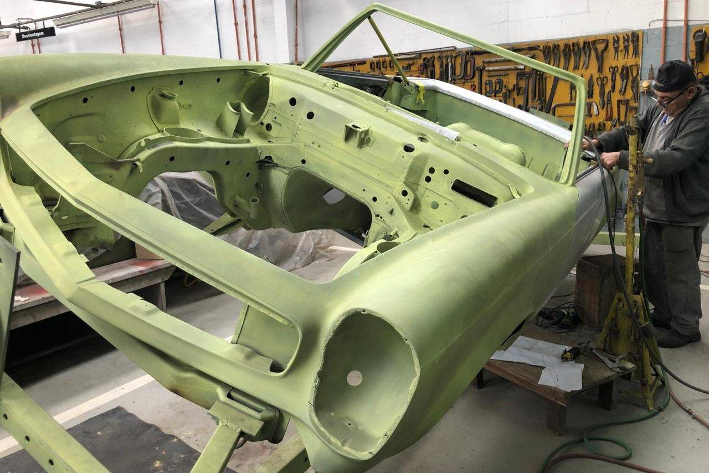
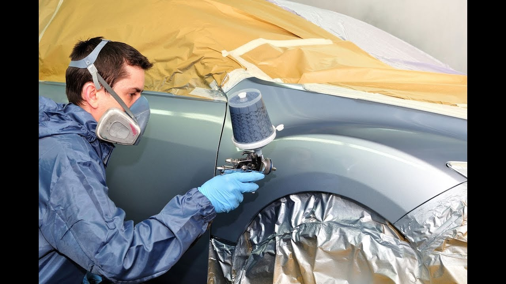
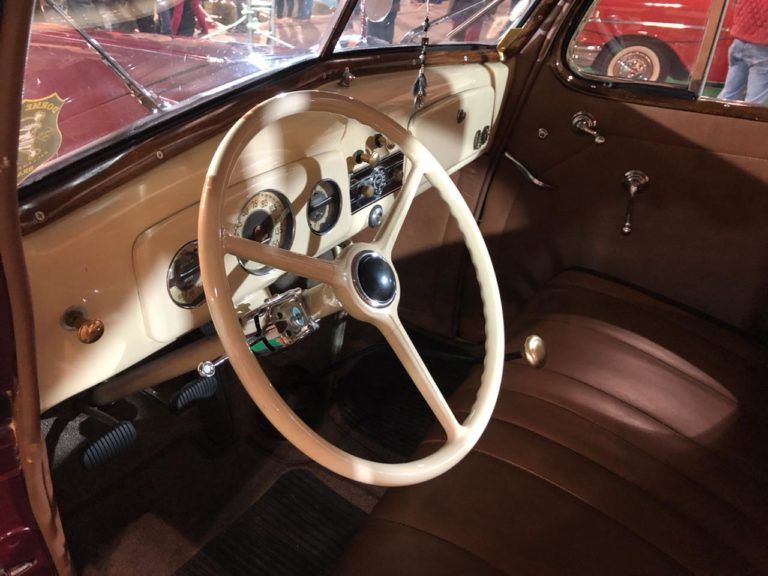
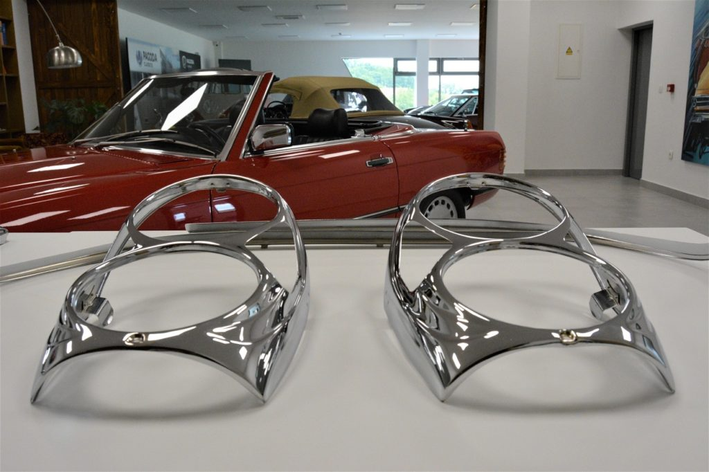

Funilaria e Pintura


"Quando se trata de carros antigos, qualquer detalhe importa"
Uma lataria enferrujada não pode ser consertada com tanta facilidade. Trabalhamos com a desmontagem completa do carro para troca
ou conserto da lataria, remoção de toda a pintura e nova pintura com padrão de cores seguindo todos os padrões
de fábrica.
Montagem e Adaptações


"A valorização é consequência da qualidade do carro"
O carro devidamente restaurado reproduz exatamente o que era aplicado à época de sua produção. A montagem de acabamentos, estofamento,
itens mecânicos e cromados será cuidadosa até mesmo na forma de aplicação das peças. Tudo deve ser adaptado
corretamente ao
usado na época em que o carro era produzido.